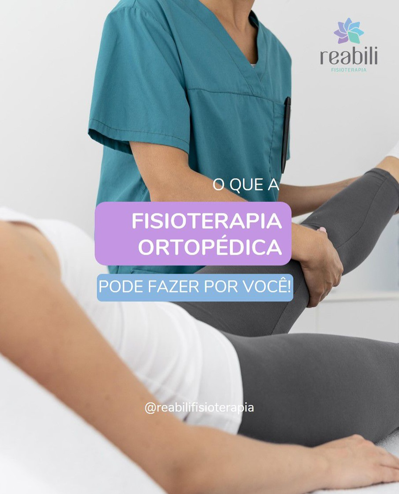
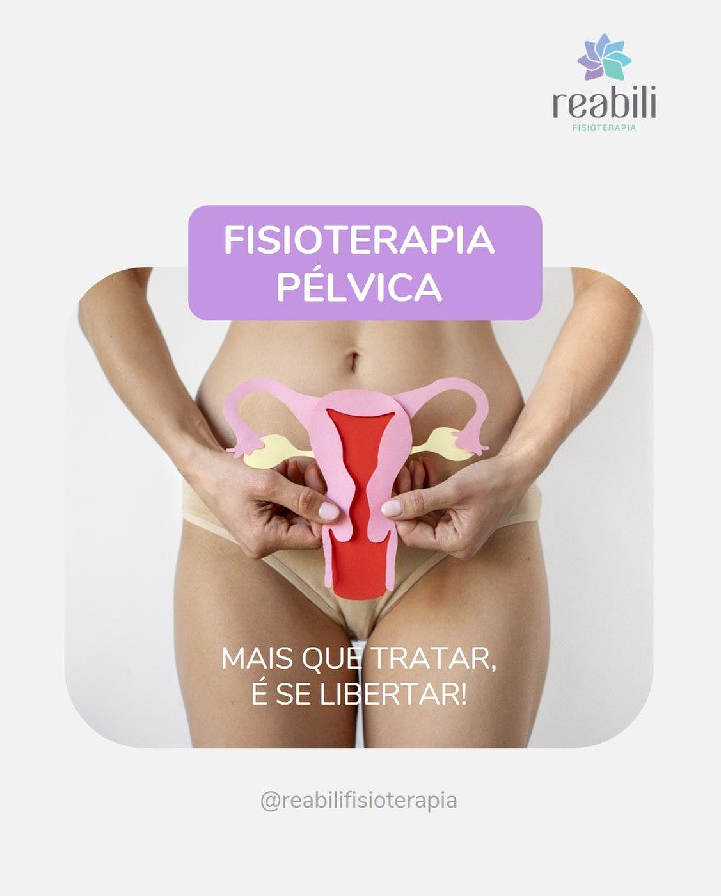
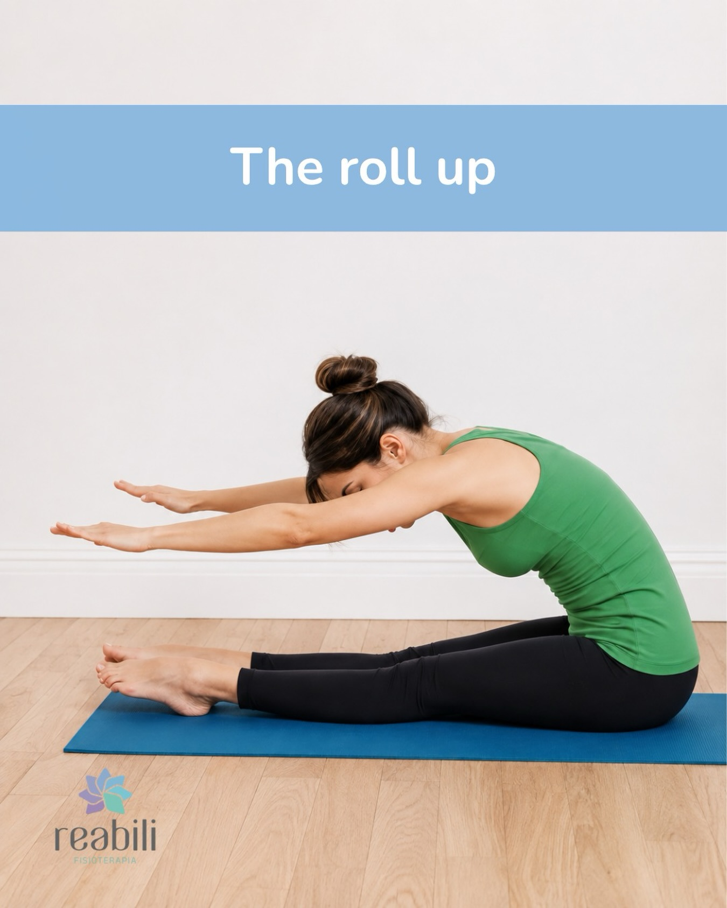
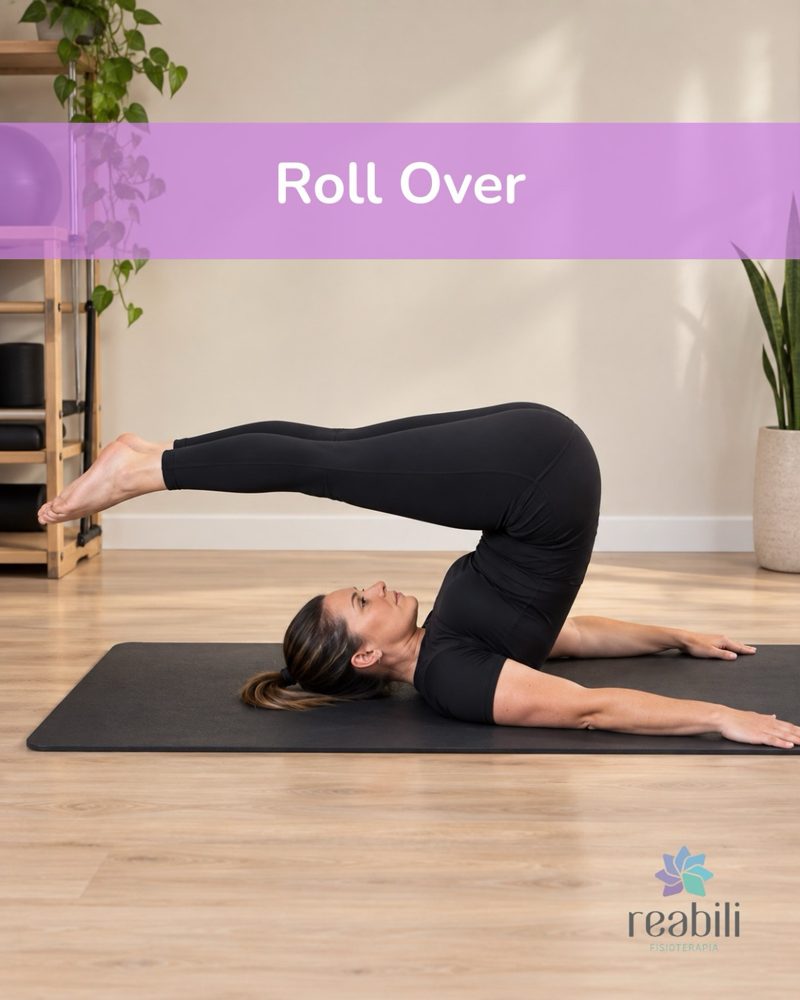

Criciúma · SC
Mais que tratar,
a fisioterapia liberta.
Há 23 anos, fisioterapia com escuta, técnica e cuidado individual para recuperar movimentos, autonomia e confiança.
Solicitar informações ↗acompanha você

Imagem publicada pela Reabili
Movimento, autonomia
e confiança para viver.
A Reabili é uma clínica de fisioterapia em Criciúma que coloca o cuidado no centro do processo. Cada encontro começa pela escuta: entender o que limita sua rotina para construir, junto com você, os próximos passos.
Atendimento
com clareza
e presença.
Possibilidades de cuidado
para o seu momento.
Frentes apresentadas publicamente pela Reabili. A indicação e disponibilidade devem ser confirmadas diretamente com a clínica.
Fisioterapia ortopédica
↗Atendimento para demandas do sistema musculoesquelético, com avaliação individual.
02Fisioterapia pélvica
↗Uma frente especializada apresentada pela clínica em seu perfil oficial.
03Pilates clássico
↗Prática de movimento e consciência corporal conduzida com acompanhamento profissional.
04Liberação
↗Recurso citado na bio da Reabili; detalhes e indicação devem ser confirmados na conversa.



NA REABILI
Seu próximo passo
começa pela conversa.
Conte o que está sentindo, o que mudou na sua rotina e o que você gostaria de recuperar. A equipe orienta o próximo passo com transparência.
- 01Você entra em contato
pelo canal que for mais simples. - 02A equipe orienta
sobre disponibilidade e avaliação. - 03O cuidado começa
com um plano explicado com clareza.
Um ponto de cuidado
em Criciúma.
23 anos · Criciúma